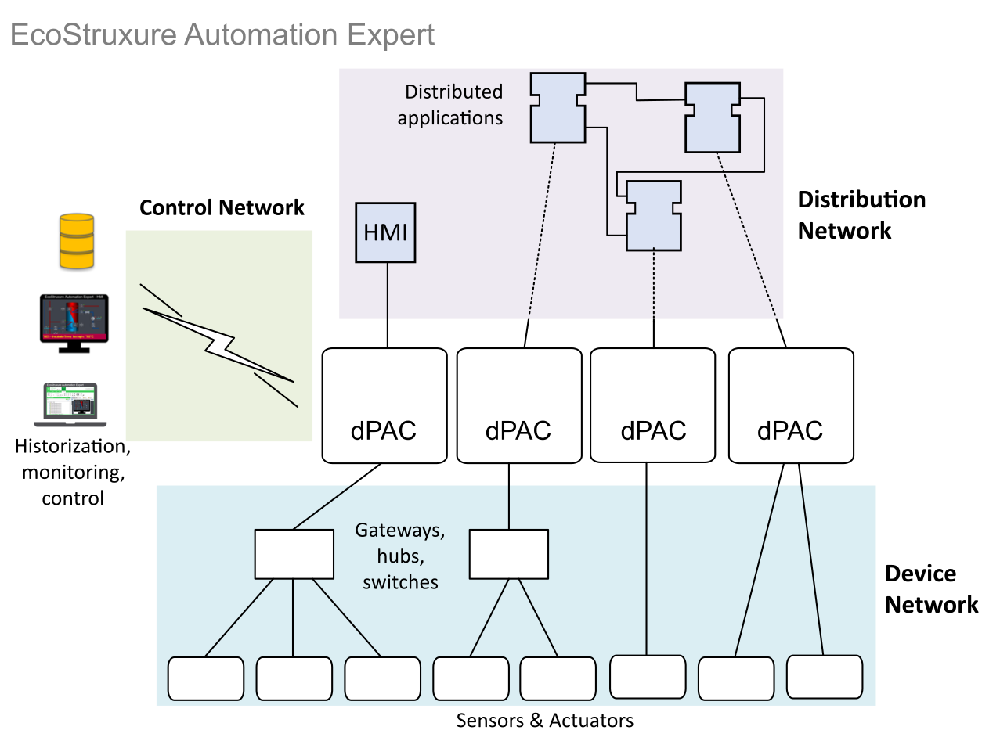

EcoStruxure Automation Expert supports a wide range of network infrastructure devices and communication protocols. A number of separate networks are necessary to support efficient communications:

The device network involves downstream communication between field device sensors and actuators (such as Altivar drives, TM3 bus couplers, TeSys islands, and so on) and dPAC platforms.
EcoStruxure Automation Expert supports the following fieldbus communication protocols:
EtherNet/IP (dPAC platforms are Master devices)
Modbus Client and Server with the protocol TCP and RTU
OPC UA (dPAC platforms are OPC UA clients)
PROFIBUS
EcoStruxure Automation Expert supports many standard network intrastructure devices, including firewalls, routers, hubs, and switches. The following fieldbus gateway devices are also provided to facilitate use of a common communication control interface:
The control network involves upstream communication between the dPAC platforms, control room systems, and other higher-level platforms performing tasks such as supervision, monitoring, archiving, and historization.
The following communication protocols are supported on the control network:
OPC UA. The dPAC controllers is configured as an OPC UA server. Refer to OPC UA Server for more information.
Modbus TCP
. Use the Hardware Configuration editor to add and configure Modbus TCP on a dPAC controller.With EcoStruxure Automation Expert, applications can be distributed across multiple interconnected dPAC and HMI devices.
The distribution network is responsible for providing efficient communications between these devices.
Refer to Cross-Communication and Reliable Cross Communication for more information.